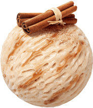
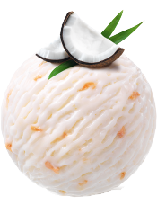
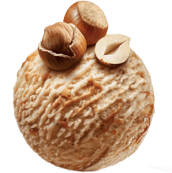
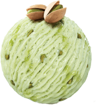
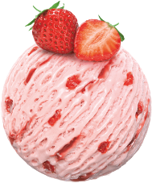
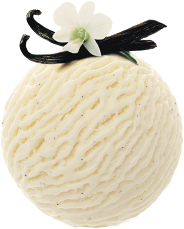
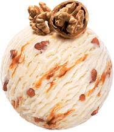

g

That’s what you’d expect of a seriously chocolaty chocolate ice cream. Best Swiss chocolate and authentic Swiss cream, the marbling enriched with wafer-thin, yet wonderfully crunchy shavings made of noble Maracaibo cocoa make this ice cream a pure delight. Just get yourself a spoon and dip into chocolate paradise.
A cinnamon ice cream that sparkles! This smooth cinnamon ice cream titillates by its perfectly balanced flavor and its velvety texture. The cinnamon coulis marbling provides the sweet and spicy note which is topped off by cinnamon powder. It’s a bit like Christmas.
Pure coconut delight. Coconut lovers will truly get their money's worth. This superbly creamy coconut ice cream, with roasted and caramelized coconut pieces creating an even more authentic coconut flavor, make this unique ice cream an exotic vision in white, which will disappear in a flash!
Pure hazelnut enjoyment. The smooth and tender hazelnut ice cream is in itself an extraordinary creation. But we didn’t stop there. We decided to enhance the nutty character by adding a superb hazelnut ripple along with caramelized bits of hazelnut. A masterpiece that will delight all hazelnut enthusiasts.
Pure Pistachio ice cream. The refined pistachio creation goes to show just how incredibly natural and intensive you can make a pistachio ice cream. It’s not only the authentic taste, but also the incredible smoothness and the delicious pistachio bits that have achieved cult status among pistachio fans. Indulge your taste buds with this explosion of taste.
Straight from the garden. Our Strawberry creation is famous for its intensive flavor of freshly-picked strawberries. A generous sprinkling of real fruit flesh, a delicious ripple and a wonderfully creamy texture - making this ice cream taste just like fresh strawberries with cream. Try it for yourself: Isn’t this just delicious?
A vanilla dream come true ... Vanilla Dream is one of the great classics, and that’s no coincidence. Only the very best Swiss cream and the seeds of carefully selected Bourbon vanilla pods go into this deliciously creamy vanilla ice cream with its perfectly pure and natural flavor. Taste the difference!
Boldly conceived, deeply loved. This original and bold creation is as popular today as when it was first launched. No doubt this is largely due to the unusual and yet very harmonious pairing between maple and walnut. While genuine Canadian maple syrup provides the dominant flavor, the caramelized walnuts add delightful sweetness and crunch. Simply irresistible!
Niraad Patel-July 24th, 2018